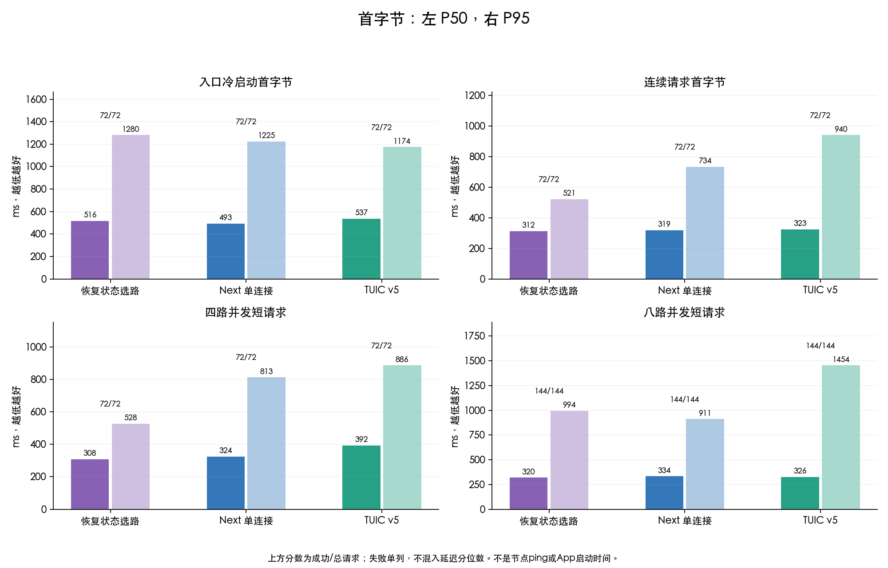
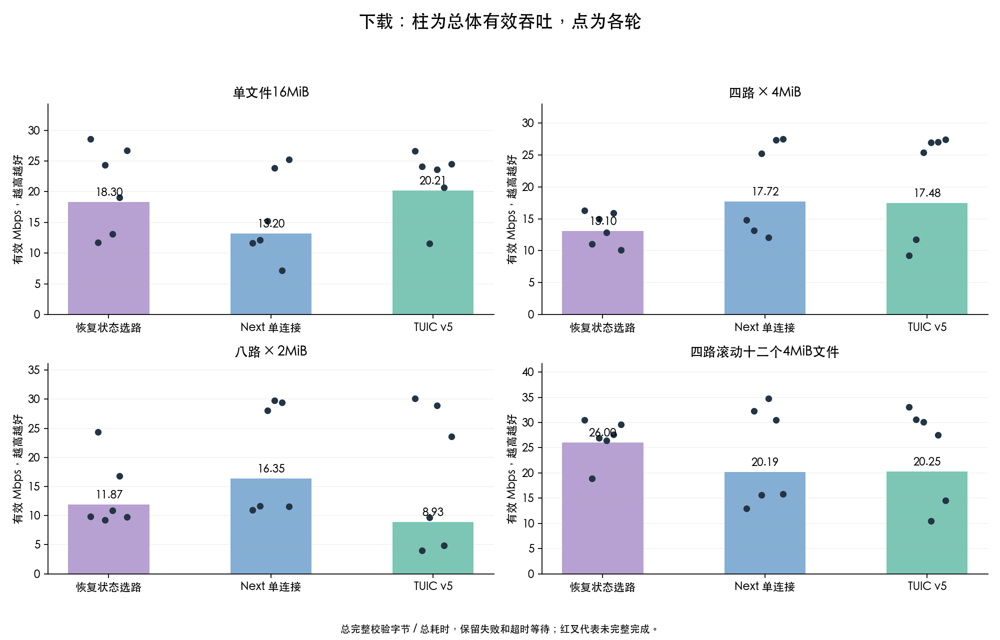
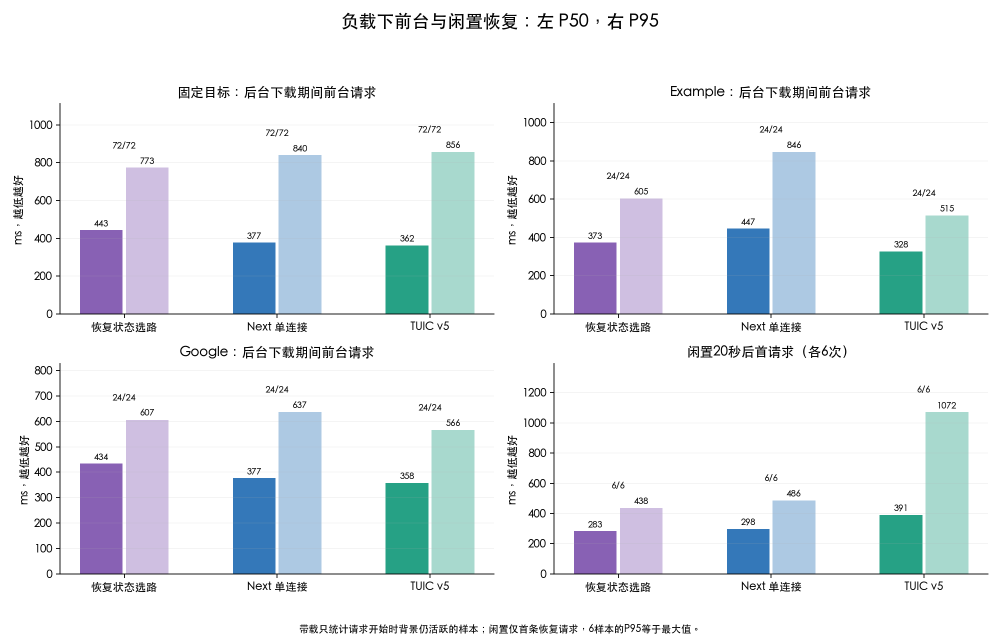
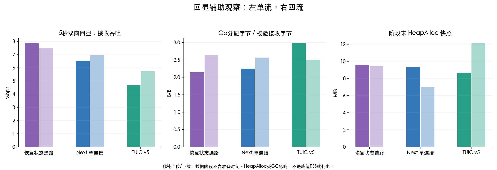
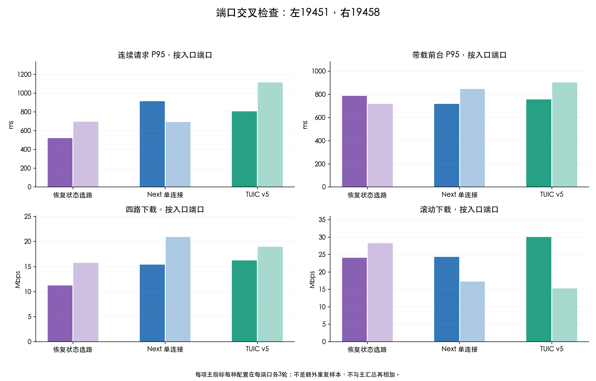
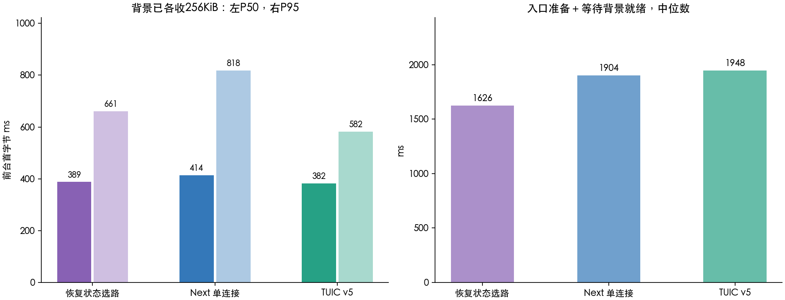

2026-11-23 · HONOR TFY-AN00 / Android12 · 同一Wi-Fi、同一公网VPS · 安卓原生核心独立程序。正式App VPN临时关闭，未替换正式App。
没有一项配置在全部指标上领先。恢复选路在本轮连续请求P95和滚动有效吞吐较好；Next单连接在四路、八路成批下载较好；TUIC单文件总体吞吐较高，两个真实网站带载P95也较低。启动期带载与背景就绪后的带载分别列出，不能只选对某配置有利的一组。
四路下载中恢复选路的总体吞吐约比单连接低26%；滚动下载则约高29%，但六轮中只在三轮吞吐高于单连接，结果受慢轮和波动影响。单文件两种Next配置未必启用第二条通道，该组的差异不能直接视为恢复算法收益。端口交叉虽减少固定端口偏差，不能消除所有源端口、路由与时段差异；本轮尚不足以判定所有网络下的稳定优劣。
| 配置 | 客户端 | 服务端 | 保持/关闭 |
|---|---|---|---|
| 恢复状态选路 | Next自适应双通道 + RecoveryAware | 冻结Next独立原型 | BBR；预算/首段副本/确认合并关闭 |
| Next单连接 | 单物理连接池，恢复选路关闭 | 与上一行相同服务端 | BBR；相同QUIC基础配置 |
| TUIC v5 | Mihomo原生TUIC池，未额外双开 | 本轮从CatNode构建V2Core，含dispatcher/limiter | 双方显式BBR；0RTT与FastOpen关闭；合成用户不限速/设备数 |
三组使用同一证书与SNI，外层为QUIC/TLS1.3，密码实现与默认握手未另调。BBR名称相同不代表依赖实现和窗口参数完全一致。Next是独立实验服务器，TUIC是CatNode核心，差异包含实现和调度开销，不是单独线格式或加密算法的极限评比，也不是严格等连接数实验。
固定目标为VPS上的HTTPS服务；所有目标证书校验开启。冷启动是每次新建客户端/入口连接，不是App启动，也没有声称清空系统DNS或所有TLS缓存。连续请求复用入口但每次新建目标TLS。文件组使用共享客户端，统计包含入口准备、目标TLS和完成校验耗时；回显吞吐则从准备完成后计时。首次并发可能包含副通道准备。
串行请求和单文件场景未必建立第二通道，因此即使恢复配置的数字不同，也不能全部归因于恢复选路。并发/带载更能体现其两条通道和新流选择。恢复信号直接来自本端已发包判丢与入口RTT，没有新增对端下行恢复反馈；既有业务不迁移、不重放。

| 场景 | 配置 | 成功/总数 | P50 ms | P95 ms | 最大 ms |
|---|---|---|---|---|---|
| 入口冷启动 | 恢复状态选路 | 72/72 | 515.61 | 1280.34 | 2388.85 |
| 入口冷启动 | Next 单连接 | 72/72 | 493.06 | 1224.58 | 1843.67 |
| 入口冷启动 | TUIC v5 | 72/72 | 537.03 | 1173.85 | 1558.56 |
| 连续请求 | 恢复状态选路 | 72/72 | 312.10 | 520.98 | 921.70 |
| 连续请求 | Next 单连接 | 72/72 | 318.68 | 733.70 | 1268.04 |
| 连续请求 | TUIC v5 | 72/72 | 323.44 | 940.19 | 1440.77 |
| 四路短请求 | 恢复状态选路 | 72/72 | 308.13 | 527.61 | 670.31 |
| 四路短请求 | Next 单连接 | 72/72 | 323.86 | 812.84 | 879.84 |
| 四路短请求 | TUIC v5 | 72/72 | 392.32 | 886.10 | 982.75 |
| 八路短请求 | 恢复状态选路 | 144/144 | 320.30 | 994.13 | 1393.08 |
| 八路短请求 | Next 单连接 | 144/144 | 333.94 | 911.24 | 1799.20 |
| 八路短请求 | TUIC v5 | 144/144 | 325.58 | 1453.96 | 1553.15 |
| 本地目标带载 | 恢复状态选路 | 72/72 | 443.23 | 773.38 | 969.77 |
| 本地目标带载 | Next 单连接 | 72/72 | 376.87 | 839.54 | 903.33 |
| 本地目标带载 | TUIC v5 | 72/72 | 362.04 | 855.97 | 993.08 |
| Example带载 | 恢复状态选路 | 24/24 | 373.03 | 604.67 | 1045.93 |
| Example带载 | Next 单连接 | 24/24 | 446.94 | 846.47 | 951.20 |
| Example带载 | TUIC v5 | 24/24 | 327.50 | 514.72 | 922.56 |
| Google带载 | 恢复状态选路 | 24/24 | 433.67 | 606.67 | 763.61 |
| Google带载 | Next 单连接 | 24/24 | 377.21 | 637.41 | 719.39 |
| Google带载 | TUIC v5 | 24/24 | 357.80 | 566.35 | 656.40 |
| 闲置20秒后首条 | 恢复状态选路 | 6/6 | 282.69 | 437.69 | 437.69 |
| 闲置20秒后首条 | Next 单连接 | 6/6 | 297.68 | 485.89 | 485.89 |
| 闲置20秒后首条 | TUIC v5 | 6/6 | 390.80 | 1072.29 | 1072.29 |
P50表示半数成功请求不超过该值；P95表示95%成功请求不超过该值，失败另列。首字节含入口/目标TLS/HTTP，不是ping。入口Dial返回可能早于成功状态被读取，不用旧entry/target_tls列直接判断根因，各阶段分位数不可相加。

| 场景 | 配置 | 轮数 | 文件完成 | 总体有效 Mbps | 逐轮中位 Mbps | 最慢轮 Mbps | 最快轮 Mbps |
|---|---|---|---|---|---|---|---|
| 单文件16MiB | 恢复状态选路 | 6 | 6/6 | 18.30 | 21.70 | 11.71 | 28.55 |
| 单文件16MiB | Next 单连接 | 6 | 6/6 | 13.20 | 13.68 | 7.19 | 25.23 |
| 单文件16MiB | TUIC v5 | 6 | 6/6 | 20.21 | 23.86 | 11.59 | 26.65 |
| 四路 × 4MiB | 恢复状态选路 | 6 | 24/24 | 13.10 | 13.94 | 10.09 | 16.31 |
| 四路 × 4MiB | Next 单连接 | 6 | 24/24 | 17.72 | 20.03 | 12.11 | 27.49 |
| 四路 × 4MiB | TUIC v5 | 6 | 24/24 | 17.48 | 26.18 | 9.22 | 27.40 |
| 八路 × 2MiB | 恢复状态选路 | 6 | 48/48 | 11.87 | 10.35 | 9.22 | 24.39 |
| 八路 × 2MiB | Next 单连接 | 6 | 48/48 | 16.35 | 19.88 | 10.97 | 29.73 |
| 八路 × 2MiB | TUIC v5 | 6 | 48/48 | 8.93 | 16.64 | 3.97 | 30.12 |
| 四路滚动十二个4MiB文件 | 恢复状态选路 | 6 | 72/72 | 26.00 | 27.26 | 18.93 | 30.45 |
| 四路滚动十二个4MiB文件 | Next 单连接 | 6 | 72/72 | 20.19 | 23.15 | 12.94 | 34.76 |
| 四路滚动十二个4MiB文件 | TUIC v5 | 6 | 72/72 | 20.25 | 28.79 | 10.51 | 33.04 |
总体有效吞吐=完整校验字节总量/全部轮次总耗时。部分未完成文件不当成完整成果，失败/超时等待保留。不是峰值，也不是各轮速度的算术平均。不同指标或不同测试时段不合并成一个总分。

| 场景 | 配置 | 全部前台成功 | 真正带载样本数 | 背景下载完成 |
|---|---|---|---|---|
| mixed/mixed | 恢复状态选路 | 72/72 | 72 | 12/12 |
| mixed/mixed | Next 单连接 | 72/72 | 72 | 12/12 |
| mixed/mixed | TUIC v5 | 72/72 | 72 | 12/12 |
| web-example/mixed | 恢复状态选路 | 24/24 | 24 | 4/4 |
| web-example/mixed | Next 单连接 | 24/24 | 24 | 4/4 |
| web-example/mixed | TUIC v5 | 24/24 | 24 | 4/4 |
| web-google/mixed | 恢复状态选路 | 24/24 | 24 | 4/4 |
| web-google/mixed | Next 单连接 | 24/24 | 24 | 4/4 |
| web-google/mixed | TUIC v5 | 24/24 | 24 | 4/4 |
带载条件为2×16MiB背景下载与12次前台HEAD共享客户端；只有请求开始时背景仍活跃的前台进入带载分位数。远端组后台使用证书匹配的zlhk.fastcat.ink:19454，前台独立访问Example/Google。没有关闭证书校验。闲置组只看20秒后的第一条请求，6样本P95等于最大值；它不是切网或断线重连测试。

| 配置 | 并发流 | 轮数 | 成功流 | 接收Mbps中位 | 分配B/接收B中位 | HeapAlloc MiB中位 |
|---|---|---|---|---|---|---|
| 恢复状态选路 | 1 | 6 | 6/6 | 7.85 | 2.14 | 9.57 |
| 恢复状态选路 | 4 | 6 | 24/24 | 7.50 | 2.64 | 9.40 |
| Next 单连接 | 1 | 6 | 6/6 | 6.54 | 2.25 | 9.34 |
| Next 单连接 | 4 | 6 | 24/24 | 6.95 | 2.57 | 6.97 |
| TUIC v5 | 1 | 6 | 6/6 | 4.68 | 2.97 | 8.69 |
| TUIC v5 | 4 | 6 | 24/24 | 5.74 | 2.50 | 12.09 |
每轮5秒同时发送并回显校验，准备时间另记。不是纯上传/下载；若有早退/错误，必须同时看成功数和原始errors。HeapAlloc是阶段末Go快照，受GC与吞吐影响，不是系统峰值内存或耗电，未做锁屏能耗判断。

每轮重启测试服务；Next/TUIC在19451与19458间交换，Next两个配置共用该轮Next入口。每种主配置每端口3轮，并平衡先后位置。两个端口仍可能受源端口、路由和时段影响；公网与生产其他流量未完全隔离。分端口结果是主样本的切片，不重复累计；见 分端口汇总。

| 配置 | 轮数 | 严格带载成功/总数 | P50 ms | P95 ms | 全部前台成功 | 背景完成 | 准备至就绪中位 ms |
|---|---|---|---|---|---|---|---|
| 恢复状态选路 | 6 | 72/72 | 388.78 | 661.32 | 72/72 | 12/12 | 1626.00 |
| Next 单连接 | 6 | 72/72 | 413.90 | 818.35 | 72/72 | 12/12 | 1903.50 |
| TUIC v5 | 6 | 72/72 | 381.95 | 582.17 | 72/72 | 12/12 | 1948.00 |
原带载程序只在后台任务启动150ms后开始前台，Next可用Warm预备入口，TUIC没有同接口。为减少准备时机差异，追加独立组六轮三配置对照：等两条背景各收到256KiB后再开始前台，最多等5秒；文件结束仍完整SHA256校验。只将请求开始时两条均已达到阈值且至少一条背景仍活跃的样本计入严格带载。等待次数、准备耗时与未满足条件的样本全部保留。
此补充组只增加测量就绪回调，协议核心和两个服务端二进制不变；组内三配置使用相同新测量程序，关闭诊断并继续交换端口。就绪计数在请求开始前读取，自检覆盖数据不丢失、收到两个信号才放行、等待取消和上限。原组与补充组在不同时间运行，且起始负载状态不同，不能把两组之间变化全部归因为预连接，更不能混合取最优结果。
六轮下载的散点已经保留在图中。部分场景最快与最慢轮差异很大；总体有效吞吐会被慢轮拉低，这正是它与逐轮中位数不同的原因。不要只挑最高点，也不要把串行或单文件场景的差异全部解释为恢复算法；该场景可能只有一个物理入口连接。
六对样本按整轮配对进行10000次重采样；比值=左配置/右配置。区间跨1表示现有样本不足以稳判方向。仅为探索性95%区间，样本少、没有多重比较校正，不是正式显著性声明。吞吐的胜轮数也列出，不能仅由它推断长期胜率。
| 指标 | 比值 左/右 | 点估计 | 探索性95%区间 | 方向 | 吞吐胜轮/6 |
|---|---|---|---|---|---|
| single16 | 恢复状态选路 / Next 单连接 | 1.39 | 0.86 – 2.14 | 高于1较好 | 4 |
| parallel4 | 恢复状态选路 / Next 单连接 | 0.74 | 0.52 – 0.96 | 高于1较好 | 2 |
| parallel8 | 恢复状态选路 / Next 单连接 | 0.73 | 0.45 – 1.11 | 高于1较好 | 1 |
| rolling | 恢复状态选路 / Next 单连接 | 1.29 | 0.82 – 1.87 | 高于1较好 | 3 |
| latency/p95 | 恢复状态选路 / Next 单连接 | 0.71 | 0.37 – 1.40 | 低于1较好 | — |
| mixed/p95 | 恢复状态选路 / Next 单连接 | 0.92 | 0.74 – 1.43 | 低于1较好 | — |
| single16 | 恢复状态选路 / TUIC v5 | 0.91 | 0.61 – 1.40 | 高于1较好 | 3 |
| parallel4 | 恢复状态选路 / TUIC v5 | 0.75 | 0.46 – 1.16 | 高于1较好 | 1 |
| parallel8 | 恢复状态选路 / TUIC v5 | 1.33 | 0.47 – 2.92 | 高于1较好 | 2 |
| rolling | 恢复状态选路 / TUIC v5 | 1.28 | 0.80 – 1.92 | 高于1较好 | 3 |
| latency/p95 | 恢复状态选路 / TUIC v5 | 0.55 | 0.26 – 1.18 | 低于1较好 | — |
| mixed/p95 | 恢复状态选路 / TUIC v5 | 0.90 | 0.72 – 1.10 | 低于1较好 | — |
| single16 | Next 单连接 / TUIC v5 | 0.65 | 0.43 – 1.04 | 高于1较好 | 3 |
| parallel4 | Next 单连接 / TUIC v5 | 1.01 | 0.68 – 1.37 | 高于1较好 | 4 |
| parallel8 | Next 单连接 / TUIC v5 | 1.83 | 0.68 – 3.53 | 高于1较好 | 4 |
| rolling | Next 单连接 / TUIC v5 | 1.00 | 0.57 – 1.78 | 高于1较好 | 4 |
| latency/p95 | Next 单连接 / TUIC v5 | 0.78 | 0.47 – 1.27 | 低于1较好 | — |
| mixed/p95 | Next 单连接 / TUIC v5 | 0.98 | 0.66 – 1.24 | 低于1较好 | — |
冻结计划与二进制SHA256 · 汇总JSON · 完整CSV · 逐轮下载 · 验证及清理 · 复现说明
两种端口分配都先通过三组功能预检，预检不计入排名。早期编排在测量前因systemd临时unit被回收退出，修正为最终会删除的runtime unit文件；保留编排说明，没有丢弃主测样本。手机VPN和唤醒设置在结束后恢复，生产443/18447不改动。仅本安卓Wi-Fi原生核心实验，不代替正式App、多网络、隐蔽性或长期稳定性验收。